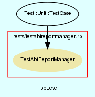

|  |
TestAbtReportManager.rb
Unit testing for AbtReportManager class.
Created by Eric D. Schabell <erics@abtlinux.org> Copyright 2006, GPL.
This file is part of AbTLinux.
AbTLinux is free software; you can redistribute it and/or modify it under the terms of the GNU General Public License as published by the Free Software Foundation; either version 2 of the License, or (at your option) any later version.
AbTLinux is distributed in the hope that it will be useful, but WITHOUT ANY WARRANTY; without even the implied warranty of MERCHANTABILITY or FITNESS FOR A PARTICULAR PURPOSE. See the GNU General Public License for more details.
You should have received a copy of the GNU General Public License along with AbTLinux; if not, write to the Free Software Foundation, Inc., 51 Franklin St, Fifth Floor, Boston, MA 02110-1301 USA
- setup
- teardown
- testGenerateHTMLPackageListing
- testSearchPackageDescriptions
- testShowFileOwner
- testShowFrozenPackages
- testShowInstalledPackages
- testShowJournal
- testShowPackageDependencies
- testShowPackageDetails
- testShowPackageLog
- testShowQueue
- testShowUntrackedFiles
- testShowUpdates
setup method for testing AbtReportManager.
[ show source ]
# File TestAbtReportManager.rb, line 37
37: def setup
38: @report = AbtReportManager.new()
39: end
teardown method to cleanup after testing.
[ show source ]
# File TestAbtReportManager.rb, line 44
44: def teardown
45: end
Test method for ‘AbtReportManager.testGenerateHTMLPackageListing()’
[ show source ]
# File TestAbtReportManager.rb, line 136
136: def testGenerateHTMLPackageListing
137: assert( @report.generateHTMLPackageListing(),
138: "testGenerateHTMLPackageListing()" )
139: end
Test method for ‘AbtReportManager.testSearchPackageDescriptions()’
[ show source ]
# File TestAbtReportManager.rb, line 110
110: def testSearchPackageDescriptions
111: assert( @report.searchPackageDescriptions( "Special text" ),
112: "testSearchPackageDescriptions()" )
113: end
Test method for ‘AbtReportManager.testShowFileOwner()’
[ show source ]
# File TestAbtReportManager.rb, line 103
103: def testShowFileOwner
104: assert( @report.showFileOwner( "ipcFile" ), "testShowFileOwner()" )
105: end
Test method for ‘AbtReportManager.testShowFrozenPackages()’
[ show source ]
# File TestAbtReportManager.rb, line 75
75: def testShowFrozenPackages
76: assert( @report.showFrozenPackages(), "testShowFrozenPackages()" )
77: end
Test method for ‘AbtReportManager.testShowInstalledPackages()’
[ show source ]
# File TestAbtReportManager.rb, line 57
57: def testShowInstalledPackages
58: assert( @report.showInstalledPackages(), "testShowInstalledPackages()" )
59: end
Test method for ‘AbtReportManager.testShowJournal()’
[ show source ]
# File TestAbtReportManager.rb, line 96
96: def testShowJournal
97: assert( @report.showJournal( $JOURNAL ), "testShowJournal()" )
98: end
Test method for ‘AbtReportManager.testShowPackageDependencies()’
[ show source ]
# File TestAbtReportManager.rb, line 82
82: def testShowPackageDependencies
83: assert( false, "testShowPackageDependencies()" )
84: end
Test method for ‘AbtReportManager.testShowPackageDetails()’
[ show source ]
# File TestAbtReportManager.rb, line 50
50: def testShowPackageDetails
51: assert( @report.showPackageDetails( "ipc" ), "testShowPackageDetails()" )
52: end
Test method for ‘AbtReportManager.testShowPackageLog()’
[ show source ]
# File TestAbtReportManager.rb, line 64
64: def testShowPackageLog
65: assert( @report.showPackageLog( "ipc", "install" ),
66: "testShowPackageLog()" )
67: assert( @report.showPackageLog( "ipc", "build" ), "testShowPackageLog()" )
68: assert( @report.showPackageLog( "ipc", "integrity" ),
69: "testShowPackageLog()" )
70: end
Test method for ‘AbtReportManager.testShowQueue()’
[ show source ]
# File TestAbtReportManager.rb, line 118
118: def testShowQueue
119: if ( @report.showQueue( "install" ) )
120: assert(false, "testShowQueue()")
121: else
122: assert(true, "testShowQueue()")
123: end
124: end
Test method for ‘AbtReportManager.testShowUntrackedFiles()’
[ show source ]
# File TestAbtReportManager.rb, line 89
89: def testShowUntrackedFiles
90: assert( @report.showUntrackedFiles(), "testShowUntrackedFiles()" )
91: end
Test method for ‘AbtReportManager.testShowUpdates()’
[ show source ]
# File TestAbtReportManager.rb, line 129
129: def testShowUpdates
130: assert( @report.showUpdates( "ipc" ), "testShowUpdates()" )
131: end